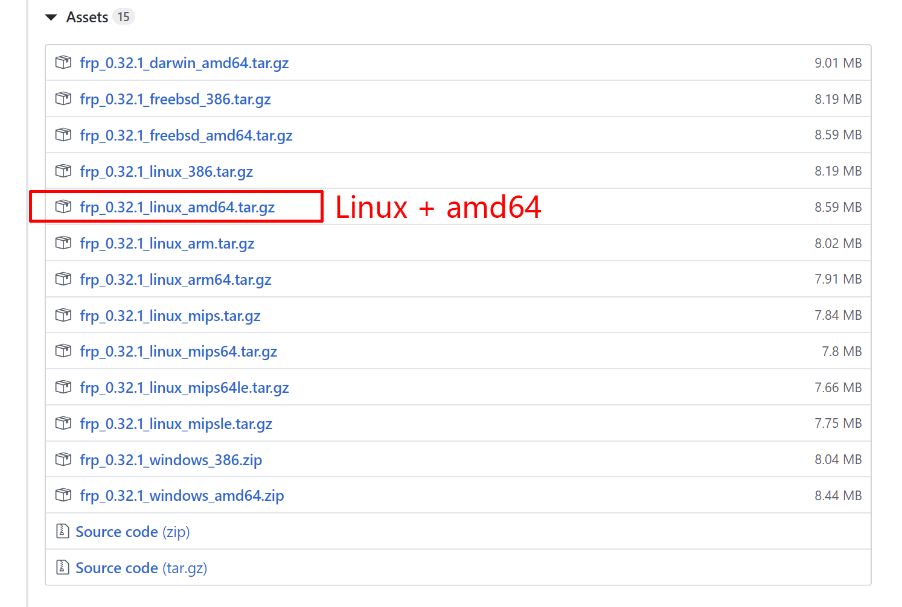
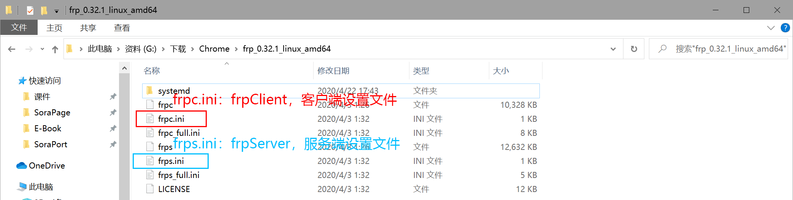
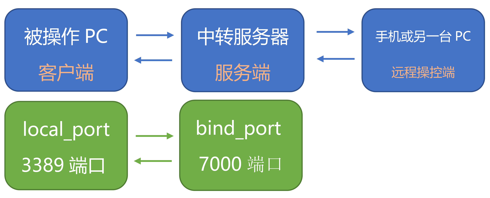
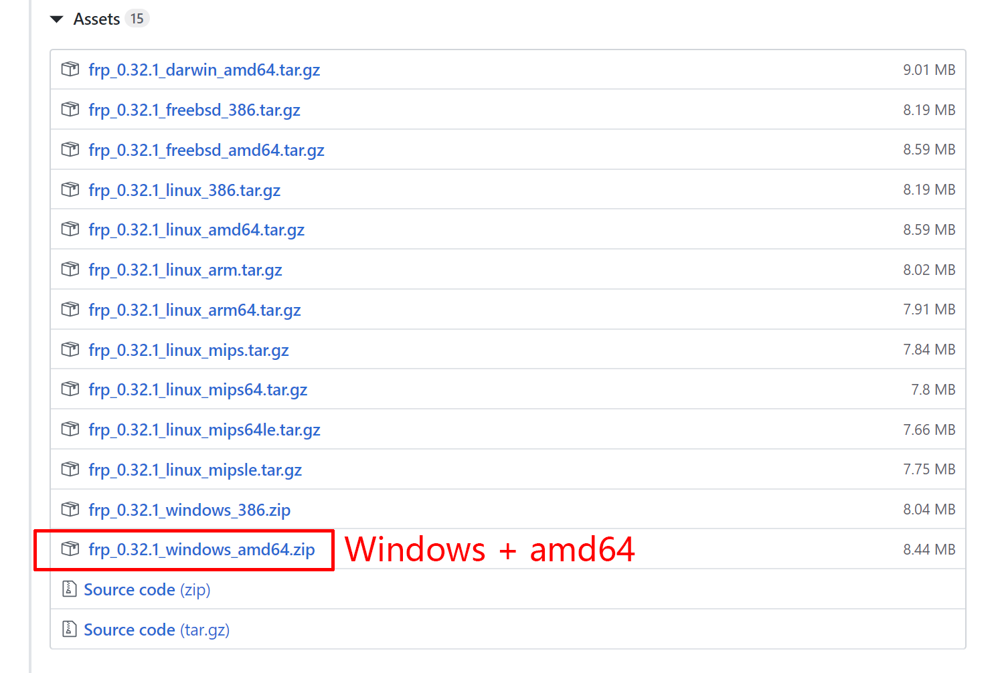
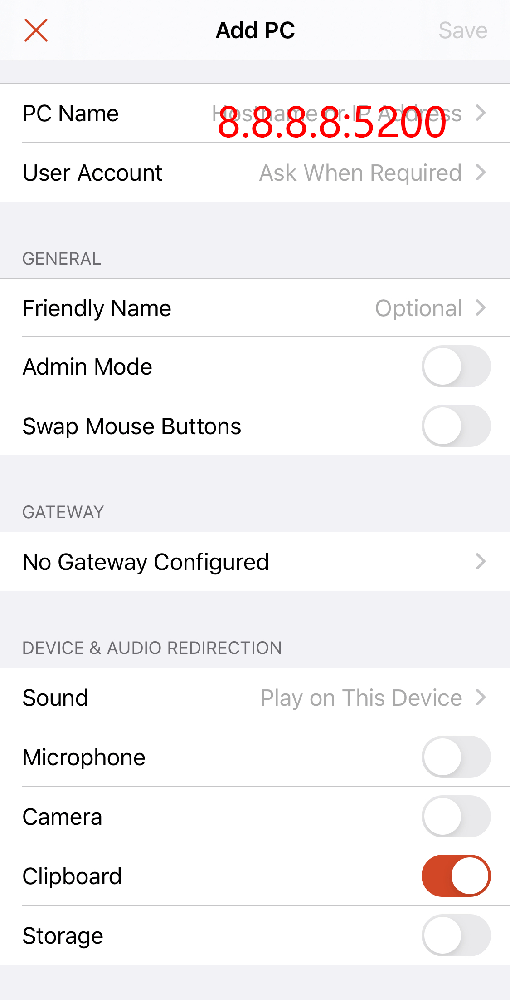

frp远程桌面设置教程
最后更新：
frp是一款功能强大的内网穿透工具，在gayhub上已经被star了超过35K次，这篇教程挑其中较为常见的远程桌面的功能来说说。
说起远程桌面，可能teamviewer算的上业界的大哥了，但是我个人用过之后觉得延迟太高了不好使，并无多加研究后遂弃。
之后自从回坑Galgame，迫切地需要一款可以在床上用iPad推游戏的软件，也试过steam的流式功能，发现对Galgame并不友好，这个需求就一直被搁置下来。
最近刷逼乎时了解到有frp这一项技术，简单尝试后，着实让我喜出望外。遂脑补开发出如下几种姿势：
- 上水课带个iPad远程操控电脑，VSCode实时码代码，并且还能调试
- 半夜在床上拿iPad推Galgame（这才是最香的用处，手动滑稽）
- 笔记本连接台式机，两个桌面同时耍，笔记本上指使台式干一些脏重活后实时传回处理结果
原理：端口映射
总的来说，就是把内网下的某一端口映射到公网下的某一端口。在远程桌面这一功能下，是将家里电脑的3389端口（windows默认远程桌面端口）映射至公网上的任意端口。然后通过公网上的这一端口访问家里电脑的远程桌面服务。
具体的原理会在下面的设置中一步步地讲解，但是上面这张图是通讯原理的核心。
服务端设置
Step-1：上传frp文件
在gayhub的项目最新release中找到对应你服务器的frp版本下载。一般而言，你的VPS都是基于amd64架构的，下载这个版本的就行。
下载到本地后，解压，得到如下文件
无需改动任何文件，原封不动地将整个文件夹上传（通过FTP软件）到服务器上任一位置，建议上传到root目录下
原理：
可以打开frps.ini文件瞅一眼，会发现里面只有一行设置 bind_port=7000
这个设置说明，中转服务器通过7000端口与被操控的PC进行通讯，即如下图所示
修改这个 bind_port 参数值可以改变服务端与被操控PC的通讯端口号
Step-2：启动服务端frp
SSH连上服务器，通过cd命令进入frp文件夹内
cd frp_0.32.1_linux_amd64输入以下命令以启动服务器端的frp，nohup命令可以让进程在后台运行
nohup ./frps -c ./frps.ini &服务器端的frp运行日志在frp文件夹里的nohup.out中可以查看
原理：
打开nohup.out会发现如下的输入信息（可以直接在FTP软件中打开该文件）
2020/04/22 18:46:50 [1;34m[I] [service.go:157] frps tcp listen on 0.0.0.0:7000[0m
2020/04/22 18:46:50 [1;34m[I] [root.go:209] start frps success[0m
说明frp在服务器上成功运行，并且正在监听7000端口
客户端设置
Step-1：下载客户端frp
同样在之前的gayhub release页面下载你电脑对应的版本，对于Windows 64位的小伙伴下载windows amd64的版本即可
Step-2：修改客户端配置文件
下载后解压，打开frpc.ini文件，改成如下代码
[common]
server_addr = 你服务器的ip地址
server_port = 7000
[rdp]
type = tcp
local_ip = 0.0.0.0
local_port = 3389
remote_port = 随意填（建议1000-65535中的某一个）如果你没有改动服务器端的配置文件，那么sever_port就填7000，如果改动了的话，这个参数值就必须和服务器端的bind_port一致
原理：
- [common]下面的两个参数告诉客户端的frp你服务器的通讯地址，由于之前服务器端的frp是监听的7000端口，所以在客户端要将数据发送到服务器的7000端口
- rdp是 Remote Desktop Protocol 的缩写，但其本质还是tcp协议
- local_port一般不能更改，在windows上默认的是通过3389端口开启远程桌面服务的
- remote_port十分重要，在下文再进行讲解
Step-3：服务器端开放remote_port设置的端口
在上一步设置的remote_port，需要在服务器端把这个端口开放。一般服务器为了安全考虑只会开放部分端口，需要我们手动开启额外需要的端口。
一般而言服务器有两层防火墙，一层在服务器提供商那里,另一层是linux的防火墙（貌似只有centos 7的系统才有）
这个步骤请自行Google如何在服务器上开放指定端口，不再啰嗦。
Step-4：打开Windows的远程桌面服务
win10家庭版是用不了这个功能的，请升级为win10专业版

Step-5：启动客户端frp
操作和服务端的没什么大差别，打开powershell（或者cmd），cd到frp的目录下（路径名注意要改成自己的）
cd E:\frp\frp_0.32.1_windows_amd64然后启动frp
.\frpc.exe -c frpc.ini启动成功后,不要关闭powershell窗口，保持让其后台运行
远程连接
Step-1：下载远程连接APP
对于用PC远程控制PC的，只需要用windows自带的远程连接工具即可：右键左下角田牌标志，打开搜索，搜索远程连接，远程桌面连接就是
对于用手机控制PC的，使用微软开发的RD Client这个APP即可，AppStore里搜索下载即可。
Step-2：连接
以iOS上的RD Client为例，进入APP，右上角加号点击添加电脑，
注意电脑名称那一栏，正确的格式是ip:port的形式，这里的port就是在客户端配置文件frpc.ini里设置的remote_port
到这里就应该可以愉快地使用了，基础部分到此为止，下面开始讲一些进阶的用法